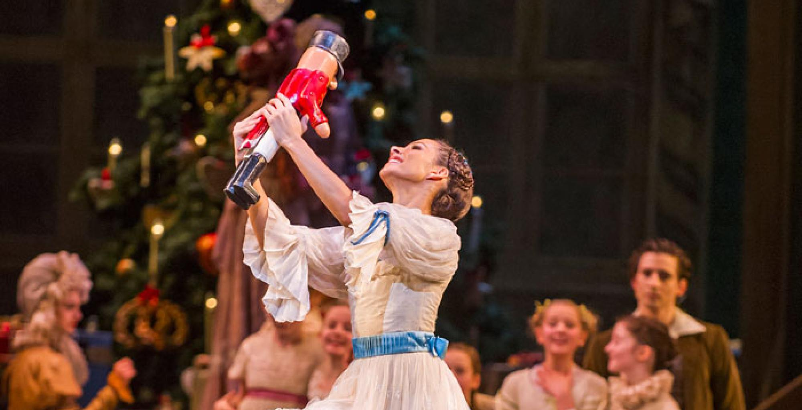

O Quebra-Nozes
O balé se passa na casa de Clara numa noite de Natal.
História em que a fantasia e magia, típicas do romantismo, contam as aventuras de um quebra-nozes de aparência humana, vestido como um soldado, mas que tem as pernas e a cabeça de tamanho desmensurado. A protagonista Clara, gostava tanto da sua aparência que o pediu como presente de Natal ao seu padrinho. Assim, o padrinho Herr Drosslmeyer, fabricante de relógios, disse: "Era precisamente para ti". Logo em seguida, Clara experimenta-o e vê que ele quebra as nozes sempre sem perder o seu sorriso e também com grande eficácia. Seu irmão Fritz, que tinha visto o funcionamento do quebra-nozes, também quis usá-lo, mas escolhe as nozes maiores que havia no cesto. Então, o quebra-nozes, sendo usado grosseiramente pelo irmão dela, acaba tendo um de seus braços quebrados. Diante das reclamações da pobre Clara, seu pai, o juiz Stahlbaun, entrega à filha o seu quebra-nozes como propriedade exclusiva, tendo Fritz que sair para brincar com os seus brinquedos. Logo em seguida, Clara pega no chão o braço de quebra-nozes e o consola, abraçando-o com a intenção de fazê-lo dormir, mas ela mesma acaba dormindo. Clara então sonha que volta ao esconderijo onde havia colocado o seu quebra-nozes, mas encontra o salão cheio de ratazanas enormes que o seu padrinho Drosselmeyer criou. A casa desapareceu e no lugar onde ficavam os móveis estavam árvores gigantescas. Não foi só isso que mudou: o Quebra-Nozes de Clara agora é um soldado de carne e osso e que tem às suas ordens um pelotão de soldados como ele. Começa uma batalha entre as ratazanas e o pelotão do Quebra-Nozes. Jogando enormes sapatos até às ratazanas, os soldados vencem a batalha, e com isso o rei das ratazanas e seu exército fogem rapidamente. O bosque se transforma numa linda estufa de inverno e o Quebra-Nozes transforma-se num lindo príncipe, que leva Clara até o Reino das Neves, onde a apresenta ao rei e à rainha. Fim do 1º Ato.
Clara e o príncipe Quebra-Nozes despedem-se e seguem para o Reino dos Doces, onde conhecem a fada açucarada que apresenta o reino a eles.Nisso acontecem apresentações representando várias partes do mundo: chocolate da Espanha, café da Arábia, chá da China, bengala doce da Rússia, Mãe gigone e os palhaços, dança da flautas e valsa das flores (algumas versões apresenta a gota de orvalho) . Por ultimo acontece o pas de deux da fada açucarada e a dança dos flocos de neve Depois desse sonho tão mágico e fantástico, Clara acorda e percebe que havia sonhado, e fica triste por isso. Assim, vai se despedir do padrinho mago.